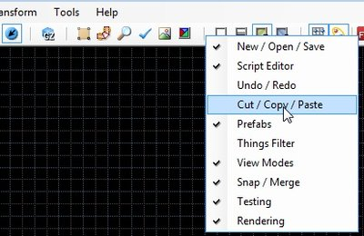
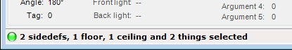
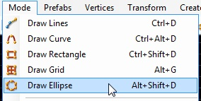
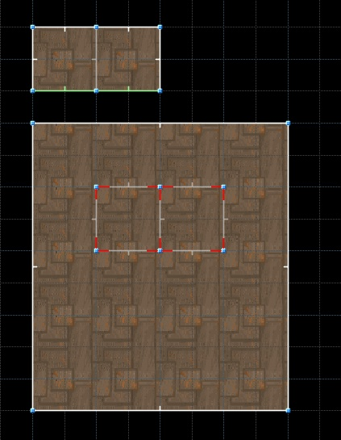
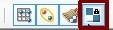
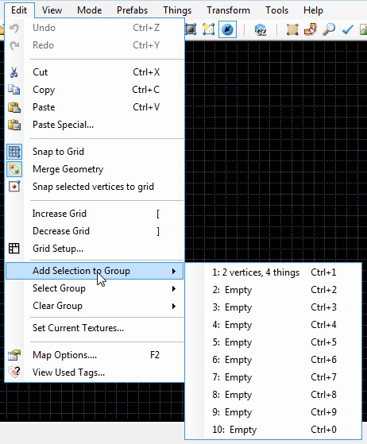
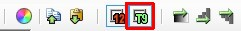
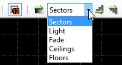
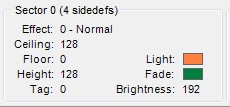

[new] Toolbar button groups can be toggled using context menu. Hold "Shift" to toggle several button groups at once.

[new] You can save screenshots using Tools -> Save Screenshot (default key is F12) and Tools -> Save Screenshot (editing area) (default key is Ctrl-F12) menu commands.
[new] You can save shortcut reference to html file using Help -> Export Shortcut Reference menu command.
[new] New action: "Open Map in current WAD", avaliable as File -> Open Map in current WAD and via Ctrl-Shift-O shortcut.
[new] New action: "Export to Wavefront .obj", avaliable as File -> Export to Wavefront .obj. It will export selected sectors (or the whole map, if no sectors are selected) to Wavefront .obj model.
[new] Info about current selection is shown at the bottom of program's window.

[new] Texture size is now shown in texture previews. You can disable this feature by unchecking "Preferences -> Interface -> Show texture and flat sizes in browsers" checkbox.
Image browser shows directory structure of Folder, PK3 and PK7 resources and can filter images by texture type. More info.
[new] Most controls of Edit Sector/Linedef/Thing forms now work in realtime (e.g. you can immediately see texture offset/scale/rotation changes while you are changing appropriate values). Action and Tag changes are still applied only after you press "OK" button.
[new] [UDMF] All UDMF properties (except "comment") can be edited using Edit Sector/Linedef/Thing/Vertex forms user interface.
Thing Edit Form has "Random angle" checkbox.
[UDMF] Sector, Linedef and Vertex info panels show additional info if a map is in UDMF format.
Classic modes:
All drawing modes are avaliable in the Mode menu

You can assign custom color to any combination of linedef flags, actions and/or activation. More info.
[new] You can place things on top of selected vertices in Vertices and Linedefs modes and inside of selected sectors in Sectors mode useing "Place Things" action.
[new] You can set, which textures to use when drawing new geometry using "Set Default Textures" action, available in Edit menu (by default, the editor uses textures from closest sector when drawing a new one).
[new] 3D floor indication (color can be changed in Preferences -> Appearance -> 3D Floors, the setting can be disabled in Preferences).

Line angle and front side direction are displayed when a line is drawn in Draw Geometry mode.
[new][UDMF] Floor/ceiling texture offsets can be pinned using this button in the toolbar: . When pinned, textures will be aligned to a sector while it is dragged.
[new] You can clear selection groups (default shortcuts are Ctrl-Shift-1 ... 0).
[new] You can add selection to groups, select and clear groups using Edit menu.

Center of map is shown in Classic modes using Highlight color.
Sectors mode:
[changed] Removed "Lower Floor by 8 mp", "Raise Floor by 8 mp", "Lower Ceiling by 8 mp" and "Raise Ceiling by 8 mp" actions.
[new] Sector Tag and Effect can now be shown on top of sectors. You can use "View Tags and Effects" button to toggle this overlay.

[new][UDMF] Create Brightness Gradient option can work in 5 modes:

[new]Sector Info panel shows the number of sector's sidedefs as well as light and fade colors (UDMF only):

[new] Sector effects are shown on top of unselected sectors (works only if "View Selection Numbering" option is enabled).
Linedefs mode:
[new][UDMF] New actions: "Align Ceiling Texture to Back Side", "Align Ceiling Texture to Front Side", "Align Floor Texture to Back Side" and "Align Floor Texture to Front Side" (available in Linedefs -> Align Textures menu).
[new][UDMF] "Make brightness gradient" command is available in Linedefs mode.
[UDMF] Linedef info panel: relative UDMF light values are shown like this: 16 (128), which means "UDMF light value" ("total surface brightness"). Total surface brightness is UDMF light value + sector brightness.
Things mode:
[new] Several thing types can now be selected at once in Thing Edit form. If you do so, a type randomly chosen from selected ones will be assigned to each selected thing. More info.
Z-height of a thing can be changed in absolute and relative mode in Thing Edit form.
Thing's X and Y position can be edited in Edit Thing form.
Vertices mode:
[UDMF] Vertical offsets of a vertex can be edited in Vertex Edit form and are shown in Vertex Info panel.
When a linedef is within Split Linedefs range, it's now highlighted using Info line color.
GZDB Visual mode:
GZDB Visual mode is the result of merging Doom Builder's Visual mode and GZDoom Visual mode. Warning: GZDoomEditing.dll and UDMFControls.dll plugins are no longer supported by GZDoom Builder and should be removed from "Plugins" folder.
New rendering features avaliable in this mode:
Dynamic lights (all types) are rendered in Visual mode. You can use Rendering panel to toggle dynamic lights rendering and animation.
Dynamic lights defined in GLDEFS are rendered in Visual mode (only one GLDEFS light per actor is currently supported).
Fog rendering in Visual mode (including colored fog in maps in UDMF format).
Event lines for PatrolPoints, cameras and InterpolationPoints.
Translucent 3D floors are rendered correctly.
Things with zero Height and Radius are rendered.
Plane Copy effect (118) is supported.
Several new 3d floor flags are supported:
"16: Use a sidedef's upper texture to draw the sides".
"32: Use a sidedef's lower texture to draw the sides".
"64: Render the 3D floor using additive translucency".
"Ignore bottom height".
When the thing category has sprite, and the thing doesn't, category sprite is used.
Doom-style shading on walls (walls going from west to east are slightly darker than walls going from north to south). This effect is affected by "vertwallshade", "horizwallshade", "evenlighting" and "smoothlighting" MAPINFO properties.
New editing features avaliable in this mode:
[new] You can Shift-Select (usually Select action = LMB) to select all adjacent surfaces with same texture, Ctrl-Select to select all adjacent surfaces with same height. Ctrl-Shift-Select will also work as expected.
[UDMF] Vertex height offsets ("zfloor" and "zceiling") can be edited.
[UDMF] Using "Increase/Decrease brightness" actions (bound to Ctrl+Mouse Wheel by default) on walls and ceilings will change sidedef/ceiling brightness, using them on floors will change sector brightness, using them on 3d floors will change brightness of 3d floor.
You can use "Toggle geometry effects" action (default key is Tab) to toggle GZDoom's geometry effects, such as slopes, 3D-floors, transfer brightness effects etc.
[new] You can hold Shift while dragging a texture to lock movement to horizontal axis, and Ctrl to lock it to vertical axis.
[new] New action: "Align Textures X and Y" (default key is Ctrl-A).
[new] "Auto-align Textures Y" action takes surface peg type into account. It also applies vertical scale of first (highlighted) surface to the rest of aligned surfaces (UDMF only).
[UDMF] Auto-align textures actions now affect sides of 3D floors.
[new] New actions: "Lower Floor/Ceiling to adjacent sector" and "Raise Floor/Ceiling to adjacent sector" (default keys are PageDown and PageUp). By default, they will find next lower/higher surface in sectors, adjacent to selected ones, and lower/raise selected sectors to this height. If you hold Ctrl, they will lower/raise sectors to lowest/highest sector inside selection. And they will also drop selected things to ground or align them to ceiling.
[new] New action: "Toggle slope" (default key is Alt-S). Select or highlight upper/lower walls then call this action to add slopes. Select or highlight floors or ceilings then call this action to remove slopes.
[new] New action: "Look Through Selection" (default key is "Y"). This action places visual camera at the same position as selected/highlighted thing and rotates it to match thing's angle. Special handling is available if targeted thing is AimingCamera, MovingCamera, SecurityCamera or InterpolationPoint.
[new] New actions: "Auto-align Textures to Selection (X)", "Auto-align Textures to Selection (Y)" and "Auto-align Textures to Selection (X and Y)".